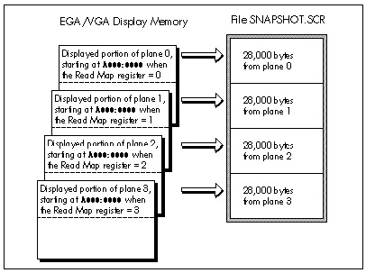

| Previous | Table of Contents | Next |
There are a number of VGA graphics topics that aren’t quite involved enough to warrant their own chapters, yet still cause a fair amount of programmer headscratching—and thus deserve treatment somewhere in this book. This is the place, and during the course of this chapter we’ll touch on saving and restoring 16-color EGA and VGA screens, the 16-out-of-64 colors issue, and techniques involved in reading and writing VGA control registers.
That’s a lot of ground to cover, so let’s get started!
The memory architectures of EGAs and VGAs are similar enough to treat both together in this regard. The basic principle for saving EGA and VGA 16-color graphics screens is astonishingly simple: Write each plane to disk separately. Let’s take a look at how this works in the EGA’s hi-res mode 10H, which provides 16 colors at 640x350.
All we need do is enable reads from plane 0 and write the 28,000 bytes of plane 0 that are displayed in mode 10H to disk, then enable reads from plane 1 and write the displayed portion of that plane to disk, and so on for planes 2 and 3. The result is a file that’s 112,000 (28,000 * 4) bytes long, with the planes stored as four distinct 28,000-byte blocks, as shown in Figure 29.1.
The program shown later on in Listing 29.1 does just what I’ve described here, putting the screen into mode 10H, putting up some bittext so there is something to save, and creating the 112K file SNAPSHOT.SCR, which contains the visible portion of the mode 10H frame buffer.

Figure 29.1 Saving EGA/VGA display memory.
The only part of Listing 29.1 that’s even remotely tricky is the use of the Read Map register (Graphics Controller register 4) to make each of the four planes of display memory readable in turn. The same code is used to write 28,000 bytes of display memory to disk four times, and 28,000 bytes of memory starting at A000:0000 are written to disk each time; however, a different plane is read each time, thanks to the changing setting of the Read Map register. (If this is unclear, refer back to Figure 29.1; you may also want to reread Chapter 28 to brush up on the operation of the Read Map register in particular and reading EGA and VGA memory in general.)
Of course, we’ll want the ability to restore what we’ve saved, and Listing 29.2 does this. Listing 29.2 reverses the action of Listing 29.1, selecting mode 10H and then loading 28,000 bytes from SNAPSHOT.SCR into each plane of display memory. The Map Mask register (Sequence Controller register 2) is used to select the plane to be written to. If your computer is slow enough, you can see the colors of the text change as each plane is loaded when Listing 29.2 runs. Note that Listing 29.2 does not itself draw any text, but rather simply loads the bit map saved by Listing 29.1 back into the mode 10H frame buffer.
LISTING 29.1 L29-1.ASM
; Program to put up a mode 10h EGA graphics screen, then save it
; to the file SNAPSHOT.SCR.
;
VGA_SEGMENT equ 0a000h
GC_INDEX equ 3ceh ;Graphics Controller Index register
READ_MAP equ 4 ;Read Map register index in GC
DISPLAYED_SCREEN_SIZE equ (640/8)*350 ;# of displayed bytes per plane in a
; hi-res graphics screen
;
stack segment para stack ‘STACK’
db 512 dup (?)
stack ends
;
Data segment word ‘DATA’
SampleText db ‘This is bit-mapped text, drawn in hi-res ’
db ‘EGA graphics mode 10h.’, 0dh, 0ah, 0ah
db ‘Saving the screen (including this text)...’
db 0dh, 0ah, ‘$’
Filename db ‘SNAPSHOT.SCR’,0 ;name of file we’re saving to
ErrMsg1 db ‘*** Couldn’t open SNAPSHOT.SCR ***’,0dh,0ah,‘$’
ErrMsg2 db ‘*** Error writing to SNAPSHOT.SCR ***’,0dh,0ah,‘$’
WaitKeyMsg db 0dh, 0ah, ‘Done. Press any key to end...’,0dh,0ah,‘$’
Handle dw ? ;handle of file we’re saving to
Plane db ? ;plane being read
Data ends
;
Code segment
assume cs:Code, ds:Data
Start proc near
mov ax,Data
mov ds,ax
;
; Go to hi-res graphics mode.
;
mov ax,10h ;AH = 0 means mode set, AL = 10h selects
; hi-res graphics mode
int 10h ;BIOS video interrupt
;
; Put up some text, so the screen isn’t empty.
;
mov ah,9 ;DOS print string function
mov dx,offset SampleText
int 21h
;
; Delete SNAPSHOT.SCR if it exists.
;
mov ah,41h ;DOS unlink file function
mov dx,offset Filename
int 21h
;
; Create the file SNAPSHOT.SCR.
;
mov ah,3ch ;DOS create file function
mov dx,offset Filename
sub cx,cx ;make it a normal file
int 21h
mov [Handle],ax ;save the handle
jnc SaveTheScreen ;we’re ready to save if no error
mov ah,9 ;DOS print string function
mov dx,offset ErrMsg1
int 21h ;notify of the error
jmp short Done ;and done
;
; Loop through the 4 planes, making each readable in turn and
; writing it to disk. Note that all 4 planes are readable at
; A000:0000; the Read Map register selects which plane is readable
; at any one time.
;
SaveTheScreen:
mov [Plane],0;start with plane 0
SaveLoop:
mov dx,GC_INDEX
mov al,READ_MAP;set GC Index to Read Map register
out dx,al
inc dx
mov al,[Plane] ;get the # of the plane we want
; to save
out dx,al ;set to read from the desired plane
mov ah,40h ;DOS write to file function
mov bx,[Handle]
mov cx,DISPLAYED_SCREEN_SIZE ;# of bytes to save
sub dx,dx ;write all displayed bytes at A000:0000
push ds
mov si,VGA_SEGMENT
mov ds,si
int 21h ;write the displayed portion of this plane
pop ds
cmp ax,DISPLAYED_SCREEN_SIZE ;did all bytes get written?
jz SaveLoopBottom
mov ah,9 ;DOS print string function
mov dx,offset ErrMsg2
int 21h ;notify about the error
jmp short DoClose ;and done
SaveLoopBottom:
mov al,[Plane]
inc ax ;point to the next plane
mov [Plane],al
cmp al,3 ;have we done all planes?
jbe SaveLoop ;no, so do the next plane
;
; Close SNAPSHOT.SCR.
;
DoClose:
mov ah,3eh ;DOS close file function
mov bx,[Handle]
int 21h
;
; Wait for a keypress.
;
mov ah,9 ;DOS print string function
mov dx,offset WaitKeyMsg
int 21h ;prompt
mov ah,8 ;DOS input without echo function
int 21h
;
; Restore text mode.
;
mov ax,3
int 10h
;
; Done.
;
Done:
mov ah,4ch;DOS terminate function
int 21h
Start endp
Code ends
end Start
| Previous | Table of Contents | Next |